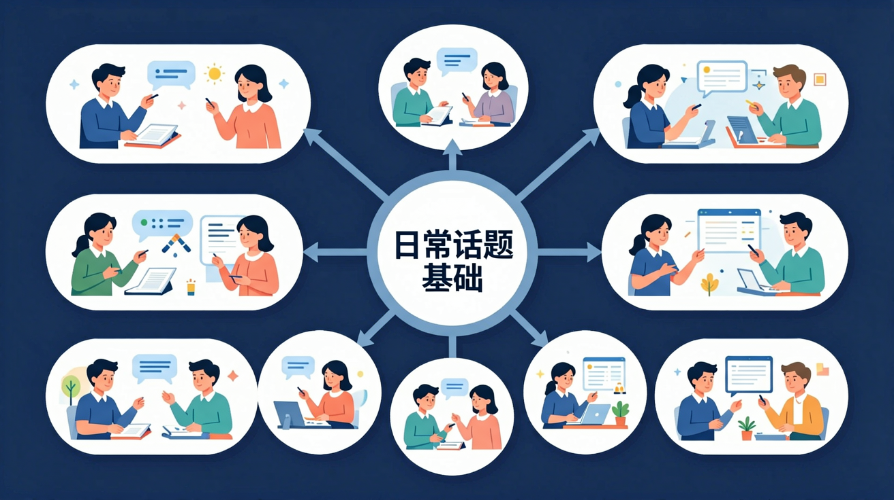

聊天气、谈爱好、说食物、讲家庭！

学习要用心，理解比死记更重要；多问"为什么"，把知识连成网
💡 常见错误往往就在细节中，仔细检查每一步！
Can you recall the key words or rules from this lesson?
Explain in your own words what you learned today.
Use today's knowledge to make a new sentence or example.
Compare this to something you already know. How are they similar or different? Can you create your own example?
先独立作答，再点选项查看对错与错因。
Which of the following is the correct English word for '牙膏'?
Which sentence is correct for discussing a shopping plan?
Which of the following is NOT a fruit?
We need to buy some ____ for breakfast.
答案：bread
'Bread' is a common item for breakfast.
Don't forget to buy ____ for cleaning your teeth.
答案：toothpaste
'Toothpaste' is used for cleaning teeth.
Which word means '洗发水' in English?
请列出你家中常见的日常用品，并尝试用英语表达。
❓ 为什么学英语总记不住单词？
❓ 外国人真的像课本里那样打招呼吗？
❓ 背了那么多句子，为什么还是不敢开口说？
学完这一课，这些问题你都能自信地回答。
把长单词分解成音节记忆，如'umbrella'拆成um-brel-la
打招呼不仅是'Hello'，不同时间用'Good morning/afternoon'
中英文购物清单差异：中文按类别列，英文常按字母顺序
用超市传单实物图片辅助记忆水果蔬菜单词
用点餐句型'I'd like...'替换成购书场景'I want...'
✅ 不可数名词用how much，可数用how many
💡 混淆数量提问句型
✅ 元音发音开头用an，如'an apple/an egg'
💡 忽视发音导致的冠词变化
口诀：名词分类记，动词搭配练，见到老外别怕错
类比：学单词像收集贴纸，多贴多用才能记住
买香蕉应该说：
下午3点见面应该说：
And：学生知道简单的打招呼用语
But：不清楚不同时间段的正确问候方式
Therefore：学会在不同时间使用合适的问候语
早上用Good morning（7-12点），下午用Good afternoon（12-18点），晚上用Good evening（18-24点）。例如：当钟表显示下午3点时，应该说Good afternoon，而不是Good morning。睡前告别要用Good night，比如9点半睡觉前对爸妈说Good night。
🌍 早晨在校门口见到同学要说Good morning；下午课外活动时遇到老师要说Good afternoon；晚上7点英语角活动开始时要问候伙伴Good evening。
现在是上午11点，该说什么？
And：能说自己的名字
But：不会完整介绍年龄和班级
Therefore：掌握3要素自我介绍
完整的自我介绍要包含3部分：1.名字（My name is...）2.年龄（I'm 8 years old）3.班级（I'm in Class 2）。例如：My name is Li Lei, I'm 9 years old, I'm in Class 3. 注意年龄用基数词+years old，班级用Class+序数词。
🌍 新学期转学来的同学可以用这个模板介绍自己；英语课上老师让轮流发言时；参加国际少儿活动时都要这样介绍。
哪个自我介绍最完整？
And：认识常见文具单词
But：不会用完整句子询问物品
Therefore：学会用What's this提问
询问近处物品用What's this（这是啥），远处用What's that（那是啥）。回答用It's a/an...例如：老师指着同桌的铅笔盒问What's this? 要回答It's a pencil case。注意a用于辅音开头的单词（a ruler），an用于元音开头的单词（an eraser）。
🌍 上课时指着投影仪上的图片提问；在文具店看到不认识的商品时；帮外教老师找教学用具时都能用。
怎么问桌上的苹果？
And：会数1-20
But：不会用英文表达数量
Therefore：掌握数量问答
问数量用How many...? 回答用数字+物品复数。例如：How many pencils? 3 pencils. 特别注意复数形式：一般加s（books），以s/x/ch/sh结尾加es（boxes），辅音+y结尾变y为i加es（3 strawberries）。
🌍 发作业本时数小组人数；体育课借篮球时；美术课领彩色纸时都需要用到，比如How many crayons do we need? 12 crayons。
怎么问图上有几只猫？